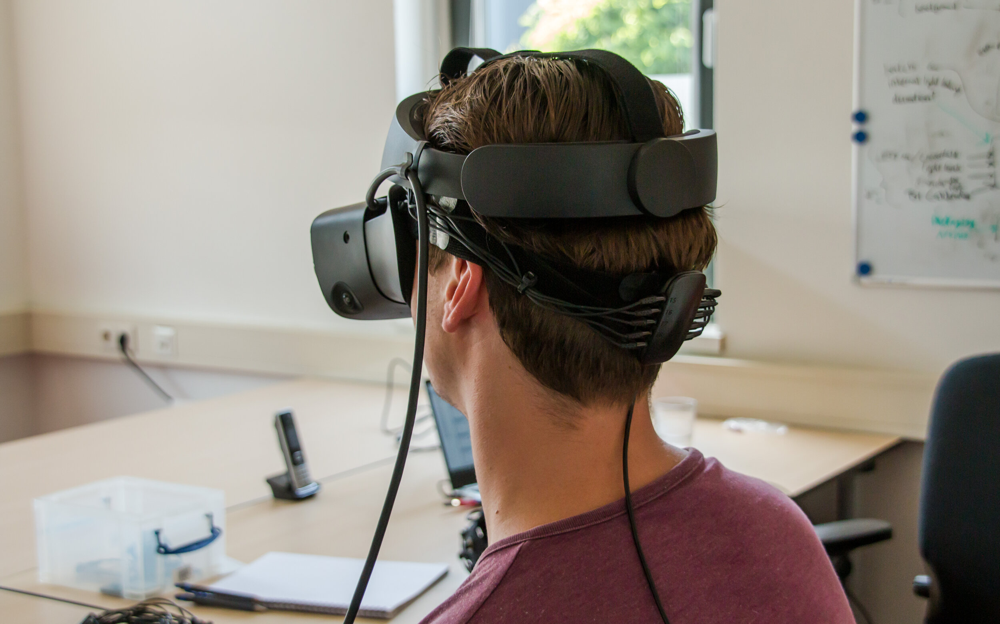
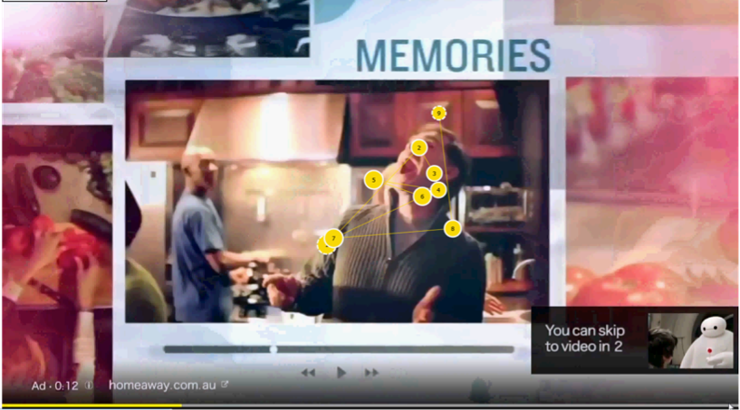
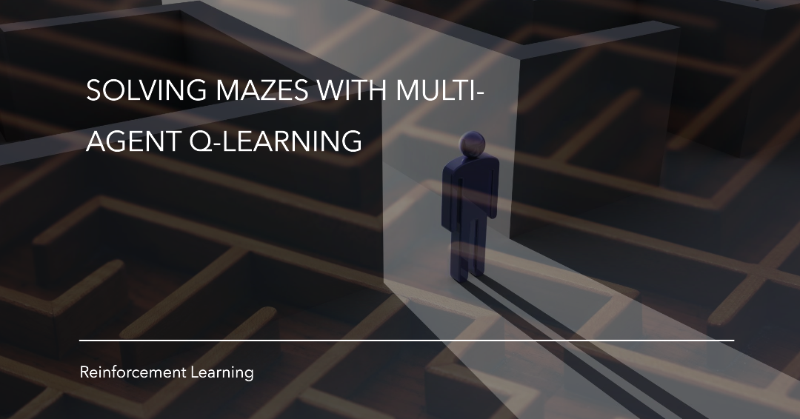
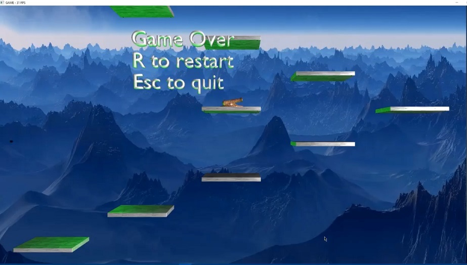
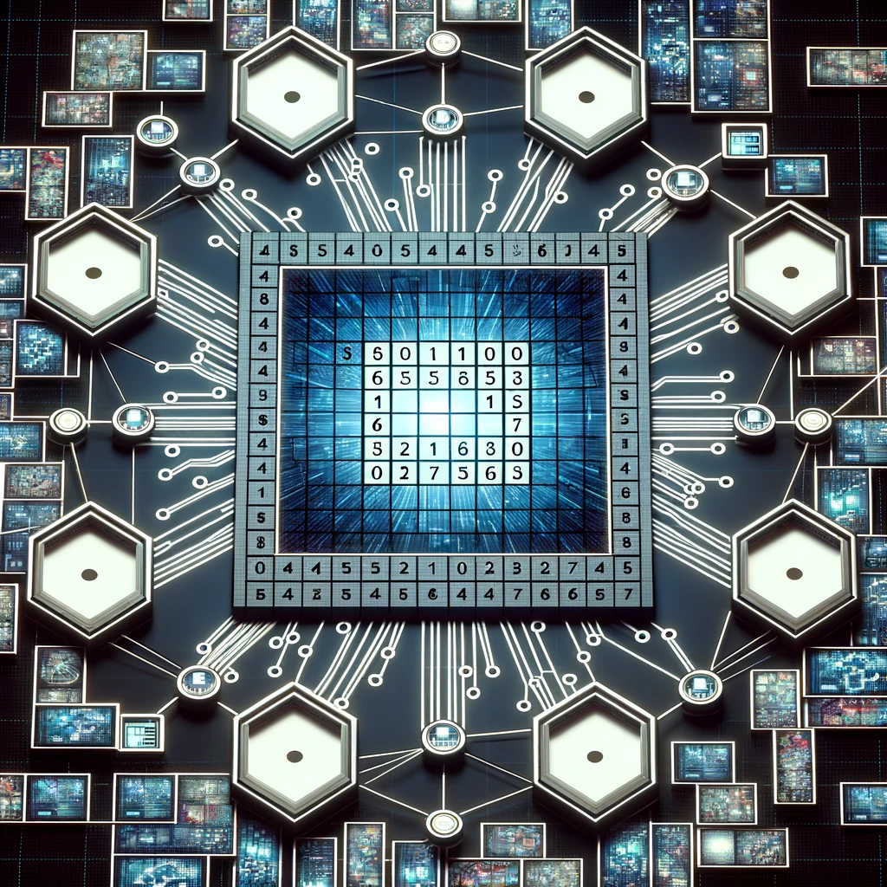

Other Projects
|  |
Development of VR environments for capturing of Multi-person VR interactions such as eye movements, brain activities, and haptic interactionsInvolved in the software development efforts for the project "Smart Learning in Multi-person VR," with a focus on integrating non-text-based smart learning methodologies into fully immersive MVR environments. Key responsibilities included designing and implementing software environnmet for capturing eye movement tracking, brain activity, and haptic interactions. Developing the virtual reality environment and scenarios aimed at understanding learner engagement and personalizing educational experiences. Related Materials |
|  |
YouTube Commercial: Exploring human’s perspective of commercialsOmkar Saiswaroop Varma Chekuri, Farah Al Saif and Ivan Calderoni An experiment was designed to explore the audience’s perspective on online commercials and analyze the relationship between the audience’s cognitive behavior and their eye movements. A group of twenty participants were chosen to participate in the experiment. The participants were divided into two groups and were asked to watch a YouTube video. The first group watched a video with a countdown function only and the other group watched the same video with a countdown function and a skip button. All subject’s eye movements were recorded by using an eye tracking that measures eye fixations durations counts. Afterwards, participants were asked to complete a questionnaire regarding a commercial that was shown before the video. Quantitative analysis was performed to determine the effect of skip function used in an online commercial. The visual scanning behavior of the individual participants was also analyzed by comparing their scan path sequences with their questionnaire responses. The quantitative analysis did not provide any substantial evidence by showing that there is no significant difference between the means of the eye fixation durations and eye fixation counts between the two scenarios with skip function and without skip function whereas the qualitative analysis showed some interesting results which showed that there is a difference between the cognitive behavior of the two groups. Related Materials |
|  |
Solving Dynamic Perfect Mazes Using Reinforcement LearningOmkar Chekuri and Yonathan Hendrawan Reinforcement Learning (RL) is an area of machine learning where an agent learns by interacting with the environment by taking a sequence of actions to gain rewards on accomplishing some goal. The aim here is gain maximum cumulative rewards by taking the best possible actions. The environment is a model that represents the real-world problem/scenarios where decisions need to be made to achieve an end goal. Some of the examples of such environments are games, autonomous driving etc. In our problem we designed a game environment from scratch that is used for generating and solving dynamic perfect mazes. We used two reinforcement algorithms Q-learning and Multi agent Sarsa to solve these mazes. We compared the performance of these reinforcement learning algorithms with a maze solving algorithm. The result showed that Q-learning and Sarsa gave better result than Wall Follower algorithm in term of the number of steps taken to reach the goal. They can also solve the maze with a projectile. However, the solving becomes more difficult the bigger the maze is. Related Materials |
|  |
Game Development (Platformer - Escape to Space)Aaron Morris, Omkar Chekuri, and Yonathan Hendrawan We designed and developed a 2.5D platformer game. This game includes essential elements like animation, collision detection, shaders, a particle system, and basic physics. Throughout the development of our game, we meticulously applied software engineering processes, dividing our tasks into distinct phases: Requirement gathering and analysis, Design, Implementation, Testing, Analysis, and Reporting. However, rather than adhering strictly to these processes, we structured our workflow into six milestones. These milestones encompassed building the game framework, creating an alpha version, completing individual facets, integrating these facets, testing, and concluding with reporting. Moreover, our development journey significantly enriched our software development skills. We honed our abilities in various aspects of computer graphics, such as animation, collision detection, shaders, and particle systems. These skills were pivotal in crafting a visually captivating and immersive gaming experience. Through hands-on experience and experimentation, we deepened our understanding of advanced graphics techniques, enhancing our proficiency in this domain. Related Materials |
|  |
Distributed Sudoku SolverOmkar Chekuri The project focuses on distributed Sudoku solving, leveraging clients and servers within a Docker environment. This innovative approach utilizes pre-existing public key pairs for secure communication between clients and servers. Additionally, the system manages server-side storage for Sudoku puzzles and maintains active client lists for efficient connectivity. A pivotal feature of the project is the implementation of a Round Robin scheduling algorithm, facilitated by server-side token allocation. This mechanism allows clients to acquire tokens, enabling effective communication with neighboring clients and ensuring system redundancy. Moreover, communication protocols are standardized through method signatures defined in a dedicated proto file. These signatures govern essential functions like key exchange and encrypted message transmission, ensuring seamless and secure communication. In addition to its core functionality, the project includes a Distributed Sudoku solver within Docker. Server manages a 9x9 Sudoku matrix, distributing 3x3 submatrices to clients for collaborative puzzle solving. This integration showcases the system's adaptability and capacity to tackle complex computational tasks effectively. Related Materials |

|
Artful AbstractionOmkar Chekuri Most of the computer Graphics research has focused on photorealistic rendering and not much on artistic rendering. Artistic rendering can be achieved by controlling the color, shape, size of the brush strokes. In this paper I tried to replicate the ideas about abstract image representations from [Haeberli 1990]. Although I did not get the exact same results as [Haeberli 1990], I followed and implemented some of the techniques described in the paper and achieved reasonable results with artistic elements. Related Materials |